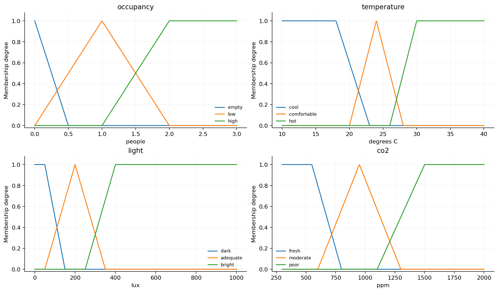
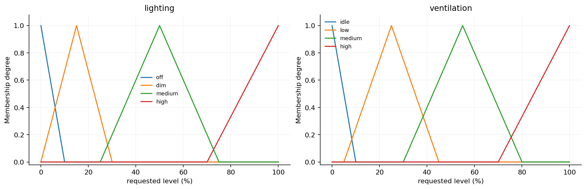
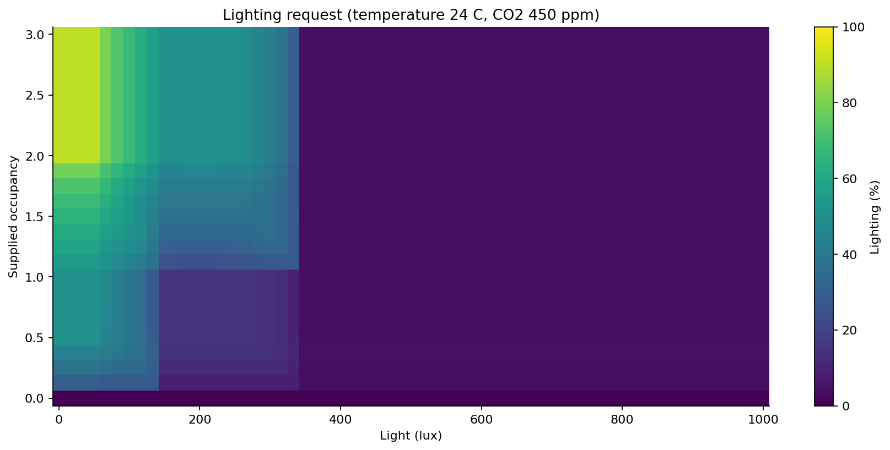
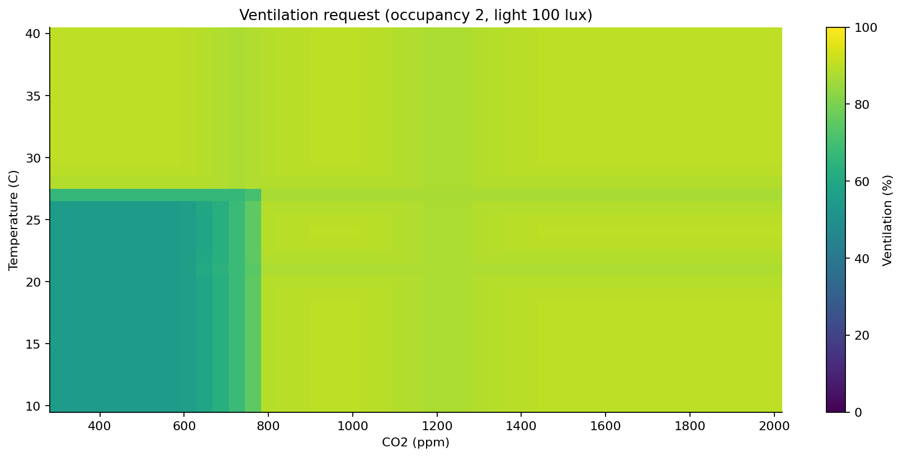
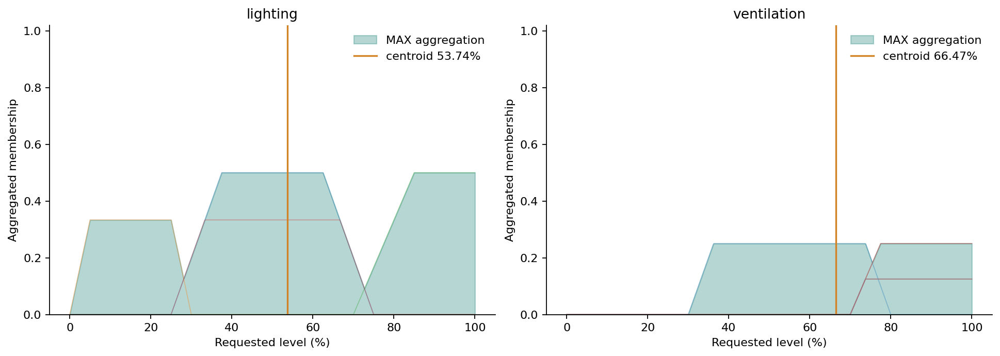
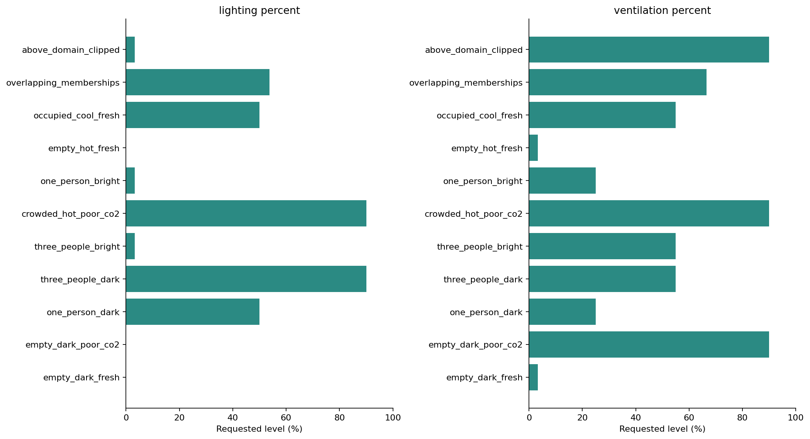

SOFT COMPUTING MINOR PROJECT / PHASE 5
Mamdani fuzzy room controller
Four environmental inputs, two control requests
Occupancy, temperature, light and CO2 feed 34 explainable rules. MIN combines conditions, clipping applies rules, MAX combines outputs, and centroid defuzzification produces lighting and ventilation percentages.
Illustrative thresholds and static requests only. No actual equipment control or measured energy savings. Occupancy errors still propagate. The compact estimator-plus-controller needs five channels, including an additional temperature measurement.
Method and viva notes / Memberships and rules / Worked rule traces
Scenarios
| scenario | occupancy | temperature | light | co2 | lighting_percent | ventilation_percent | raw_lighting_centroid | exact_off | clipped_inputs | fired_rules |
|---|---|---|---|---|---|---|---|---|---|---|
| empty_dark_fresh | 0.0 | 24 | 0 | 450 | 0.000 | 3.333 | 3.333 | True | 0 | 2 |
| empty_dark_poor_co2 | 0.0 | 24 | 0 | 1600 | 0.000 | 90.000 | 3.333 | True | 0 | 2 |
| one_person_dark | 1.0 | 24 | 20 | 450 | 50.000 | 25.000 | 50.000 | False | 0 | 2 |
| three_people_dark | 3.0 | 24 | 20 | 450 | 90.000 | 55.000 | 90.000 | False | 0 | 2 |
| three_people_bright | 3.0 | 24 | 700 | 450 | 3.333 | 55.000 | 3.333 | False | 0 | 2 |
| crowded_hot_poor_co2 | 3.0 | 32 | 20 | 1600 | 90.000 | 90.000 | 90.000 | False | 0 | 2 |
| one_person_bright | 1.0 | 24 | 700 | 450 | 3.333 | 25.000 | 3.333 | False | 0 | 2 |
| empty_hot_fresh | 0.0 | 35 | 20 | 450 | 0.000 | 3.333 | 3.333 | True | 0 | 2 |
| occupied_cool_fresh | 2.0 | 16 | 200 | 450 | 50.000 | 55.000 | 50.000 | False | 0 | 2 |
| overlapping_memberships | 1.5 | 27 | 100 | 1150 | 53.742 | 66.469 | 53.742 | False | 0 | 12 |
| above_domain_clipped | 3.0 | 45 | 1200 | 2500 | 3.333 | 90.000 | 3.333 | False | 3 | 2 |
The raw lighting centroid remains visible. Exact zero at occupancy zero is a separate postprocessing gate. Environmental clipping is counted rather than hidden.
Input membership functions

Output membership functions

Lighting response surface

Ventilation response surface

Worked clipping, aggregation and centroids

Scenario results

Real-row integration examples
| model | Source_Row | true_occupancy | predicted_occupancy | temperature | light | co2 | lighting_percent | ventilation_percent | true_label_reference_lighting | true_label_reference_ventilation | clipped_inputs |
|---|---|---|---|---|---|---|---|---|---|---|---|
| baseline | 1483 | 0 | 0 | 25.38 | 0 | 380 | 0.000 | 3.628 | 0.000 | 3.628 | 0 |
| baseline | 2834 | 1 | 1 | 25.19 | 93 | 360 | 40.854 | 25.000 | 40.854 | 25.000 | 0 |
| baseline | 2950 | 2 | 2 | 25.69 | 123 | 380 | 60.065 | 55.000 | 60.065 | 55.000 | 0 |
| baseline | 3497 | 3 | 2 | 26.19 | 124 | 760 | 59.743 | 74.403 | 59.743 | 74.403 | 0 |
| baseline | 8086 | 3 | 0 | 25.50 | 10 | 370 | 0.000 | 3.674 | 90.000 | 55.000 | 0 |
| baseline | 8087 | 3 | 0 | 25.50 | 10 | 370 | 0.000 | 3.674 | 90.000 | 55.000 | 0 |
| ga | 1483 | 0 | 0 | 25.38 | 0 | 380 | 0.000 | 3.628 | 0.000 | 3.628 | 0 |
| ga | 2834 | 1 | 1 | 25.19 | 93 | 360 | 40.854 | 25.000 | 40.854 | 25.000 | 0 |
| ga | 2950 | 2 | 1 | 25.69 | 123 | 380 | 33.059 | 25.000 | 60.065 | 55.000 | 0 |
| ga | 3497 | 3 | 2 | 26.19 | 124 | 760 | 59.743 | 74.403 | 59.743 | 74.403 | 0 |
| ga | 8086 | 3 | 0 | 25.50 | 10 | 370 | 0.000 | 3.674 | 90.000 | 55.000 | 0 |
| ga | 8087 | 3 | 0 | 25.50 | 10 | 370 | 0.000 | 3.674 | 90.000 | 55.000 | 0 |
The true-label reference is the same rules with known occupancy for illustration, not a measured correct control action. These selected examples are not an independent evaluation.
Rule base
| id | output | antecedent | consequent |
|---|---|---|---|
| L01 | lighting | occupancy is empty | off |
| L02 | lighting | occupancy is low AND light is dark | medium |
| L03 | lighting | occupancy is low AND light is adequate | dim |
| L04 | lighting | occupancy is low AND light is bright | off |
| L05 | lighting | occupancy is high AND light is dark | high |
| L06 | lighting | occupancy is high AND light is adequate | medium |
| L07 | lighting | occupancy is high AND light is bright | off |
| V01 | ventilation | occupancy is empty AND co2 is fresh AND temperature is cool | idle |
| V02 | ventilation | occupancy is empty AND co2 is fresh AND temperature is comfortable | idle |
| V03 | ventilation | occupancy is empty AND co2 is fresh AND temperature is hot | idle |
| V04 | ventilation | occupancy is empty AND co2 is moderate AND temperature is cool | medium |
| V05 | ventilation | occupancy is empty AND co2 is moderate AND temperature is comfortable | medium |
| V06 | ventilation | occupancy is empty AND co2 is moderate AND temperature is hot | medium |
| V07 | ventilation | occupancy is empty AND co2 is poor AND temperature is cool | high |
| V08 | ventilation | occupancy is empty AND co2 is poor AND temperature is comfortable | high |
| V09 | ventilation | occupancy is empty AND co2 is poor AND temperature is hot | high |
| V10 | ventilation | occupancy is low AND co2 is fresh AND temperature is cool | low |
| V11 | ventilation | occupancy is low AND co2 is fresh AND temperature is comfortable | low |
| V12 | ventilation | occupancy is low AND co2 is fresh AND temperature is hot | high |
| V13 | ventilation | occupancy is low AND co2 is moderate AND temperature is cool | medium |
| V14 | ventilation | occupancy is low AND co2 is moderate AND temperature is comfortable | medium |
| V15 | ventilation | occupancy is low AND co2 is moderate AND temperature is hot | high |
| V16 | ventilation | occupancy is low AND co2 is poor AND temperature is cool | high |
| V17 | ventilation | occupancy is low AND co2 is poor AND temperature is comfortable | high |
| V18 | ventilation | occupancy is low AND co2 is poor AND temperature is hot | high |
| V19 | ventilation | occupancy is high AND co2 is fresh AND temperature is cool | medium |
| V20 | ventilation | occupancy is high AND co2 is fresh AND temperature is comfortable | medium |
| V21 | ventilation | occupancy is high AND co2 is fresh AND temperature is hot | high |
| V22 | ventilation | occupancy is high AND co2 is moderate AND temperature is cool | high |
| V23 | ventilation | occupancy is high AND co2 is moderate AND temperature is comfortable | high |
| V24 | ventilation | occupancy is high AND co2 is moderate AND temperature is hot | high |
| V25 | ventilation | occupancy is high AND co2 is poor AND temperature is cool | high |
| V26 | ventilation | occupancy is high AND co2 is poor AND temperature is comfortable | high |
| V27 | ventilation | occupancy is high AND co2 is poor AND temperature is hot | high |
Next phase
Phase 6 adds simulated energy estimates using declared appliance powers. No energy calculations or adaptive modes are included in Phase 5.